Strategie inwestycyjne
W zależności od stosowanej strategii inwestor może czerpać z handlu opcjami różne korzyści. Nabywanie opcji kupna i sprzedaży daje nowym inwestorom możliwość spekulacji na rynkach wzrostowych i spadkowych.
Strategia long call jest najbardziej podstawową strategią opcyjną, która polega na nabywaniu opcji kupna przez inwestora oczekującego znacznego wzrostu ceny akcji powyżej ceny wykonania przed datą wygaśnięcia.
Dźwignia finansowa:
W porównaniu z kupnem instrumentu nabywca opcji kupna jest w stanie uzyskać przewagę, ponieważ niżej wyceniane opcje kupna szybciej zyskują na wartości za każdym razem, gdy cena instrumentu bazowego wzrasta o jeden punkt procentowy.
Opcje kupna mają jednak ograniczoną żywotność. Jeśli przed datą wygaśnięcia opcji cena akcji bazowych nie przekroczy ceny wykonania, opcje kupna wygasną jako bezwartościowe.
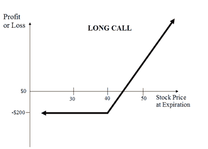
Nieograniczony potencjał zysku
W związku z tym, że wysokość cen akcji w dniu wygaśnięcia nie może podlegać żadnym ograniczeniom, maksymalny możliwy do wypracowania zysk przy stosowaniu strategii kupna long call również nie podlega ograniczeniom.
Wzór na obliczanie zysku podano poniżej:
- Maks. zysk = Brak ograniczeń
- Osiągnięcie maks. zysku następuje, gdy cena instrumentu bazowego >= Cena wykonania long call + Zapłacona premia
- Zysk = Cena instrumentu bazowego – Cena wykonania long call – Zapłacona premia
Ograniczone ryzyko
Ryzyko związane ze strategią kupna long call jest ograniczone do kosztu kupna opcji call bez względu na to, jak niski poziom ceny osiągają akcje notowane w dniu wygaśnięcia.
Wzór na obliczanie maksymalnej straty podano poniżej:
- Maks. strata = Zapłacona premia + Zapłacone prowizje
- Maks. strata poniesiona przy cenie instrumentu bazowego <= Cena wykonania long call
Próg rentowności
Cenę akcji, która pozwala osiągnąć próg rentowności dla pozycji long call, można obliczyć za pomocą następującego wzoru:
- Próg rentowności = Cena wykonania long call + Zapłacona premia
Strategia opcyjna spreadu niedźwiedzia jest stosowana, gdy inwestor oczekuje umiarkowanego spadku cen instrumentu bazowego w perspektywie krótkoterminowej.
Spread niedźwiedzia polega na nabyciu opcji sprzedaży in-the-money o większej wartości i wystawieniu opcji sprzedaży out-of-the-money o niższej wartości tego samego bazowego papieru wartościowego o tym z tą samą datą wygaśnięcia.
Budowa strategii spreadu niedźwiedzia
Kupno 1 opcji put ITM
Sprzedaż 1 opcji put OTM
Stosując krótką sprzedaż opcji put out-of-the-money, inwestor obniża koszt wprowadzenia długiej pozycji, ale rezygnuje z możliwości osiągnięcia dużego zysku w przypadku gwałtownego spadku ceny aktywów bazowych.
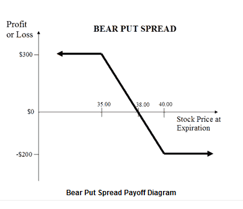
Ograniczony zysk na spadkach
Aby osiągnąć maksymalny zysk, kurs instrumentu bazowego musi zostać zamknięty poniżej ceny wykonania opcji sprzedaży out-of-the-money w momencie wygaśnięcia. Obie opcje wygasają in the money, ale nabyta opcja sprzedaży o wyższej cenie wykonania będzie miała wyższą wartość wewnętrzną niż wystawiona opcja sprzedaży o niższej cenie wykonania. Zatem maksymalny zysk w przypadku strategii spreadu niedźwiedzia jest równy różnicy w cenie wykonania pomniejszonej o debet pobrany przy otwieraniu pozycji.
Wzór na obliczanie maksymalnego zysku podano poniżej:
- Maks. zysk = Cena wykonania long put – Cena wykonania short put – Zapłacona premia netto – Prowizje
- Osiągnięcie maks. zysku następuje, gdy cena instrumentu bazowego <= Cena wykonania short put
Ograniczone ryzyko przy wzrostach
Jeśli w dniu wygaśnięcia cena akcji wzrośnie powyżej ceny wykonania opcji sprzedaży in-the-money, wówczas strategia spreadu niedźwiedzia wygeneruje maksymalną stratę równą debetowi pobranemu przy zawieraniu transakcji.
- Maks. strata = Zapłacona premia netto + Zapłacone prowizje
- Maks. strata występuje, gdy cena instrumentu bazowego >= Cena wykonania long put
Próg rentowności
Cenę akcji, która pozwala osiągnąć próg rentowności dla spreadu niedźwiedzia, można obliczyć za pomocą następującego wzoru:
- Próg rentowności = Cena wykonania long put – Zapłacona premia netto
Strategia opcyjna spreadu byka jest stosowana, gdy inwestor oczekuje umiarkowanego wzrostu ceny instrumentu bazowego w perspektywie krótkoterminowej. Spread byka polega na nabyciu opcji kupna at-the-money i jednoczesnej sprzedaży opcji kupna out-of-the-money o wyższej cenie wykonania tego samego instrumentu bazowego o tym samym miesiącu wygaśnięcia.
Budowa spreadu byka
Kupno 1 opcji call ATM
Sprzedaż 1 opcji call OTM
Stosując krótką sprzedaż opcji call out-of-the-money, inwestor obniża koszt wprowadzenia długiej pozycji, ale rezygnuje z możliwości osiągnięcia dużego zysku w przypadku gwałtownego wzrostu ceny aktywów bazowych.
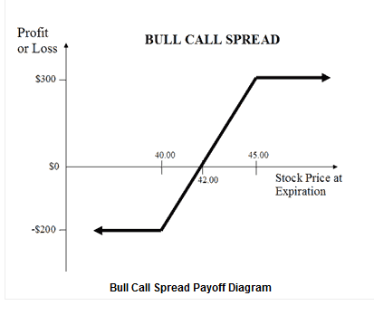
Ograniczony wzrost zysków
W przypadku strategii spreadu byka maksymalny zysk jest osiągany, gdy cena bazowa jest wyższa od ceny wykonania dwóch opcji kupna, a jego wartość jest równa różnicy między ceną wykonania dwóch opcji kupna a debetem początkowym na otwarcie pozycji.
Wzór na obliczanie maksymalnego zysku podano poniżej:
- Maks. zysk = Cena wykonania short call – Cena wykonania long call – Zapłacona premia netto – Zapłacone prowizje
- Osiągnięcie maks. zysku następuje, gdy cena instrumentu bazowego >= Cena wykonania short call
Nieograniczone ryzyko straty
Strategia spreadu byka będzie skutkowała stratą, jeśli cena bazowa spadnie w momencie wygaśnięcia opcji. Maksymalna strata nie może być większa niż debet początkowy na otwarcie transakcji na spread.
Wzór na obliczanie maksymalnej straty podano poniżej:
- Maks. strata = Zapłacona premia netto + Zapłacone prowizje
- Maks. strata występuje, gdy cena instrumentu bazowego <= Ceny wykonania long call
Próg rentowności
Cenę akcji, która pozwala osiągnąć próg rentowności dla pozycji spreadu byka, można obliczyć za pomocą następującego wzoru:
- Próg rentowności = Cena wykonania long call + Zapłacona premia netto
Opcja kupna z pokryciem jest strategią opcyjną, która polega na wystawianiu opcji kupna przeciwko posiadanym bazowym papierom wartościowym.
Budowa opcji kupna z pokryciem
100 długich pozycji w akcjach
Sprzedaż 1 opcji call
W przypadku opcji kupna z pokryciem inwestor otrzymuje premie za wystawianie opcji kupna i jednocześnie cieszy się wszystkimi korzyściami wynikającymi z posiadania instrumentów bazowych, takich jak dywidendy i prawa głosu. Jeśli jednak otrzyma wezwanie do wykonania wystawionych opcji kupna, będzie zobowiązany sprzedać swoje akcje.
Potencjał zysków z wystawionych opcji kupna z pokryciem jest jednak ograniczony, ponieważ inwestor w zamian za premię rezygnuje z możliwości czerpania zysków wynikających ze znacznego wzrostu ceny instrumentu bazowego.
Opcje kupna out-of-the-money z pokryciem
Jest to strategia w ramach opcji kupna z pokryciem, w której inwestor o umiarkowanych zyskach sprzedaje opcje kupna out-of-the-money przeciwko posiadanym akcjom bazowym. Opcje kupna OTM z pokryciem cieszą się popularnością wśród inwestorów, ponieważ pozwalają gromadzić premie i jednocześnie generować zyski w razie wzrostu cen akcji bazowych.
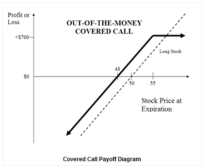
Ograniczony potencjał zysku
Oprócz premii otrzymanej za wystawienie opcji kupna, zysk generowany przez opcje kupna OTM z pokryciem związany jest również ze wzrostem ceny akcji bazowej do ceny wykonania sprzedanej opcji kupna.
Wzór na obliczanie maksymalnego zysku podano poniżej:
- Maks. zysk = Otrzymana premia – Cena zakupu instrumentu bazowego + Cena wykonania short call – Zapłacone prowizje
- Osiągnięcie maks. zysku następuje, gdy cena instrumentu bazowego >= Cena wykonania short call
Nieograniczony potencjał strat
Potencjalne straty dla tej strategii mogą być bardzo duże i występują, gdy cena akcji spada. Jednak ryzyko to nie różni się od tego, na jakie narażony jest typowy posiadacz akcji. W rzeczywistości strata osoby wystawiającej opcję kupna z pokryciem jest nieznacznie łagodzona przez premie otrzymane za wystawienie opcji kupna.
Wzór na obliczanie straty podano poniżej:
- Maks. strata = Brak ograniczeń
- Strata występuje, gdy cena instrumentu bazowego < Cena zakupu instrumentu bazowego – Otrzymana premia
- Strata = Cena zakupu instrumentu bazowego – Cena instrumentu bazowego – Maks. zysk + Zapłacone prowizje
Próg rentowności
Cenę akcji, która pozwala osiągnąć próg rentowności dla opcji kupna z pokryciem (OTM), można obliczyć za pomocą następującego wzoru:
- Próg rentowności = Cena zakupu instrumentu bazowego – Otrzymana premia
Strategia long put jest podstawową strategią opcyjną, która polega na nabywaniu opcji sprzedaży przez inwestora oczekującego znacznego spadku ceny instrumentu bazowego poniżej ceny wykonania przed datą wygaśnięcia.
W porównaniu do krótkiej sprzedaży instrumentu bazowego, wygodniejszym rozwiązaniem jest zajęcie przeciwnej w stosunku do niego pozycji w postaci zakupu opcji sprzedaży. Ryzyko jest ograniczone do premii zapłaconej za opcje sprzedaży, co stanowi przeciwieństwo do nieograniczonego ryzyka w przypadku krótkiej sprzedaży instrumentu bazowego.
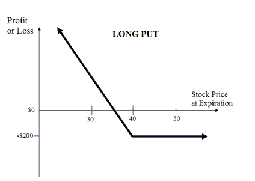
Ograniczony potencjał
W związku z tym, że cena akcji może osiągnąć wartość zero w dniu wygaśnięcia, maksymalny zysk w przypadku strategii long put jest ograniczony do ceny wykonania zakupionej opcji put pomniejszonej o cenę zakupu opcji.
Wzór na obliczanie zysku podano poniżej:
- Maks. zysk = Brak ograniczeń
- Zysk przy cenie instrumentu bazowego = 0
- Zysk = Cena wykonania long put – Zapłacona premia przy ograniczonym ryzyku
Ryzyko związane ze stosowaniem strategii long put jest ograniczone do ceny zapłaconej za opcję sprzedaży, bez względu na wysokość ceny instrumentu bazowego w dniu wygaśnięcia.
Wzór na obliczanie maksymalnej straty podano poniżej:
- Maks. strata = Zapłacona premia + Zapłacone prowizje
- Maks. strata występuje, gdy cena instrumentu bazowego >= Cena wykonania long put
Próg rentowności
Kurs rozliczeniowy, który pozwala osiągnąć próg rentowności dla pozycji long put, można obliczyć za pomocą następującego wzoru:
- Próg rentowności = Cena wykonania long put – Zapłacona premia
Strategia długiego stelaża to neutralna strategia w handlu opcjami, która polega na jednoczesnym nabyciu opcji sprzedaży i opcji kupna tego samego instrumentu bazowego o tej samej cenie wykonania i tym samym terminie wygaśnięcia.
Budowa strategii długiego stelaża
Kupno 1 opcji call ATM
Kupno 1 opcji put ATM
Długi stelaż to strategia opcyjna, która zapewnia nieograniczone zyski przy ograniczonym ryzyku. Jest stosowana przez inwestorów, którzy oczekują znacznej zmienności aktywów bazowych w perspektywie krótkoterminowej.
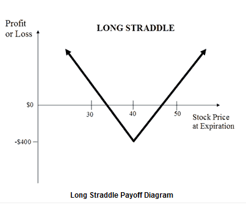
Nieograniczony potencjał zysku
Osiągnięcie dużego zysku w przypadku strategii długiego stelaża jest możliwe, gdy cena akcji bazowych znacząco wzrasta lub maleje w momencie wygaśnięcia.
Wzór na obliczanie zysku podano poniżej:
- Maksymalny nieograniczony zysk
- Osiągnięcie zysku następuje, gdy cena instrumentu bazowego > Cena wykonania long call + Zapłacona premia netto lub Cena instrumentu bazowego < Cena wykonania long put – Zapłacona premia netto
- Zysk = Cena instrumentu bazowego – Cena wykonania long call – Zapłacona premia netto lub Cena wykonania long put – Cena instrumentu bazowego – Zapłacona premia netto
Ograniczone ryzyko
W przypadku strategii długiego stelaża maksymalna strata występuje, gdy cena akcji bazowych w dniu wygaśnięcia osiąga wartość na poziomie cen wykonania kupionych opcji. Przy danej cenie obie opcje wygasają jako bezwartościowe, a inwestor handlujący opcjami traci cały początkowy depozyt wpłacony w celu zawarcia transakcji.
Wzór na obliczanie maksymalnej straty podano poniżej:
- Maks. strata = Zapłacona premia netto + Zapłacone prowizje
- Maksymalna strata występuje, gdy cena instrumentu bazowego jest równa cenie wykonania
Progi rentowności
W ramach pozycji długiego stelaża występują dwa progi rentowności. Progi rentowności można obliczyć za pomocą następujących wzorów:
- Wyższy próg rentowności = Cena wykonania long call + Zapłacona premia netto
- Niższy próg rentowności = Cena wykonania long put – Zapłacona premia netto
Strategia rozszerzonego długiego stelaża to strategia opcyjna o charakterze neutralnym, która polega na jednoczesnym nabyciu opcji sprzedaży out-of-the-money i opcji kupna out-of-the-money tego samego instrumentu bazowego o tym samym terminie wygaśnięcia.
Budowa strategii rozszerzonego długiego stelaża
Kupno 1 opcji call OTM
Kupno 1 opcji put OTM
Rozszerzony długi stelaż to strategia opcyjna, która zapewnia nieograniczone zyski przy ograniczonym ryzyku. Jest stosowana przez inwestorów, którzy oczekują znacznej zmienności aktywów bazowych w perspektywie krótkoterminowej. Opcje rozszerzonego długiego stelaża należą do spreadów debetowych, ponieważ wymagają wykorzystania tzw. debetu w celu zawarcia transakcji.
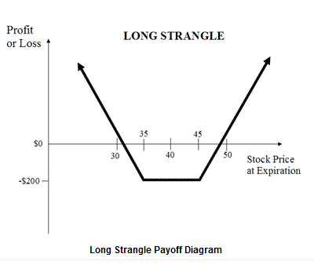
Nieograniczony potencjał zysku
Osiągnięcie dużego zysku w przypadku strategii rozszerzonego długiego stelaża jest możliwe, gdy cena akcji bazowych znacząco wzrasta lub maleje w momencie wygaśnięcia.
Wzór na obliczanie zysku podano poniżej:
- Maksymalny nieograniczony zysk
- Osiągnięcie zysku następuje, gdy cena instrumentu bazowego > Cena wykonania long call + Zapłacona premia netto lub Cena instrumentu bazowego < Cena wykonania long put – Zapłacona premia netto
- Zysk = Cena instrumentu bazowego – Cena wykonania long call – Zapłacona premia netto lub Cena wykonania long put – Cena instrumentu bazowego – Zapłacona premia netto
Ograniczone ryzyko
W przypadku strategii rozszerzonego długiego stelaża maksymalna strata występuje, gdy cena akcji bazowych w dniu wygaśnięcia osiąga wartość na poziomie cen wykonania kupionych opcji. Przy danej cenie obie opcje wygasają jako bezwartościowe, a inwestor handlujący opcjami traci cały początkowy depozyt wpłacony w celu zawarcia transakcji.
Wzór na obliczanie maksymalnej straty podano poniżej:
- Maks. strata = Zapłacona premia netto + Zapłacone prowizje
- Maksymalna strata występuje, gdy cena instrumentu bazowego osiąga wartość między ceną wykonania long call a ceną wykonania long put
Progi rentowności
W ramach pozycji rozszerzonego długiego stelaża występują dwa progi rentowności. Progi rentowności można obliczyć za pomocą następujących wzorów:
- Wyższy próg rentowności = Cena wykonania long call + Zapłacona premia netto
- Niższy próg rentowności = Cena wykonania long put – Zapłacona premia netto
Wystawianie niezabezpieczonych opcji jest ryzykowną strategią handlu opcjami, która polega na sprzedawaniu przez inwestora opcji kupna względem akcji, których nie posiada. Nazywana jest również strategią wystawiania niepokrytych opcji kupna.
Strategia wystawiania niezabezpieczonych opcji kupna out-of-the-money polega na wystawianiu opcji kupna out-of-the-money przez inwestora, który nie posiada akcji. Jest to strategia opcyjna polegająca na gromadzeniu premii, którą stosuje się w przypadku transakcji o charakterze neutralnym lub o niższej wartości w stosunku do instrumentu bazowego.
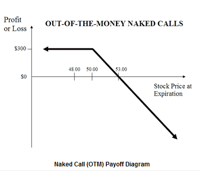
Ograniczony potencjał zysku
Maksymalny zysk jest ograniczony i równy premii otrzymanej za sprzedaż opcji kupna.
Wzór na obliczanie maksymalnego zysku podano poniżej:
- Maks. zysk = Otrzymana premia – Zapłacone prowizje
- Osiągnięcie maks. zysku następuje, gdy cena instrumentu bazowego <= Cena wykonania short call
Nieograniczony potencjał strat
Jeśli cena bazowa gwałtownie wzrośnie w momencie wygaśnięcia, wystawca niezabezpieczonej opcji out-of-the-money będzie musiał spełnić wymagania dotyczące opcji, aby móc sprzedać instrument bazowy posiadaczowi opcji po niższej cenie, a tym samym zakupić instrument bazowy po kursie otwarcia. W związku z tym, że wysokość ceny instrumentu bazowego w momencie wygaśnięcia nie może podlegać żadnym ograniczeniom, maksymalne potencjalne straty związane z wystawianiem niezabezpieczonych opcji out-of-the-money są teoretycznie nieograniczone.
Wzór na obliczanie straty podano poniżej:
- Maks. strata = Brak ograniczeń
- Strata występuje, gdy cena instrumentu bazowego > Cena wykonania short call + Otrzymana premia
- Strata = Cena instrumentu bazowego – Cena wykonania short call – Otrzymana premia + Zapłacone prowizje
Próg rentowności
Cenę akcji, która pozwala osiągnąć próg rentowności dla niezabezpieczonej opcji kupna (OTM), można obliczyć za pomocą następującego wzoru:
- Próg rentowności = Cena wykonania short call + Otrzymana premia
Odwrócenie ryzyka (inaczej korytarz) to strategia opcyjna, która polega na utrzymywaniu akcji bazowych oraz jednoczesnym nabywaniu ochronnych opcji sprzedaży i wystawianiu opcji kupna względem posiadanych akcji. Opcje sprzedaży i kupna są opcjami typu out-of-the-money o tym samym miesiącu wygaśnięcia, które muszą charakteryzować się równą liczbą kontraktów.
Budowa strategii odwrócenia ryzyka
100 długich pozycji w akcjach
Sprzedaż 1 opcji call OTM
Kupno 1 opcji put OTM
Formalnie rzecz biorąc, strategia odwrócenia ryzyka jest odpowiednikiem opcji kupna out-of-the-money z pokryciem, która obejmuje zakup dodatkowej ochronnej opcji sprzedaży.
Strategię odwrócenia ryzyka warto stosować, gdy inwestor wystawia opcję kupna z pokryciem w celu otrzymania premii, przy czym chce uchronić się przed niespodziewanym gwałtownym spadkiem ceny instrumentu bazowego.
Ograniczony potencjał zysku
Wzór na obliczanie maksymalnego zysku podano poniżej:
- Maks. zysk = Cena wykonania short call – Cena zakupu instrumentu bazowego + Otrzymana premia netto – Zapłacone prowizje
- Osiągnięcie maks. zysku następuje, gdy cena instrumentu bazowego >= Cena wykonania short call
Ograniczone ryzyko
Wzór na obliczanie maksymalnej straty podano poniżej:
- Maks. strata = Cena zakupu instrumentu bazowego – Cena wykonania long put – Otrzymana premia netto + Zapłacone prowizje.
- Maks. strata występuje, gdy cena instrumentu bazowego <= Cena wykonania long put
Próg rentowności
Cenę akcji, która pozwala osiągnąć próg rentowności dla strategii odwrócenia ryzyka, można obliczyć za pomocą następującego wzoru:
- Próg rentowności = Cena bazowa zakupu + Zapłacona premia netto
Wystawianie niepokrytych opcji put jest strategią opcyjną polegającą na sprzedaży opcji put bez stosowania krótkiej sprzedaży instrumentu bazowego. Jest również nazywana strategią wystawiania nieosłoniętych opcji put (zabezpieczonych gotówką), którą stosuje się w celu uzyskania stałego zysku dzięki ciągłemu pobieraniu premii.
Budowa wystawionych niepokrytych opcji put
Sprzedaż 1 opcji put ATM
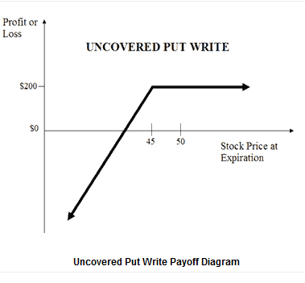
Ograniczone zyski bez wzrostu ryzyka
Zysk z wystawionej niepokrytej opcji put jest ograniczony do premii otrzymanych za sprzedane opcje. Osoba wystawiająca niepokryte opcje put co miesiąc sprzedaje opcje put, które są nieco out-of-the-money, gromadząc premie, o ile cena akcji instrumentu bazowego utrzymuje się powyżej ceny wykonania put w momencie wygaśnięcia.
- Maks. zysk = Otrzymana premia – Zapłacone prowizje
- Osiągnięcie maks. zysku następuje, gdy cena instrumentu bazowego >= Cena wykonania short put
Nieograniczone ryzyko straty przy niewielkim zabezpieczeniu przed spadkiem cen
Mimo że zgromadzona premia może złagodzić niewielki spadek ceny instrumentu bazowego, w przypadku jej znacznego spadku poniesione straty mogą okazać się ogromne.
Wzór na obliczanie straty podano poniżej:
- Maks. strata = Brak ograniczeń
- Strata występuje, gdy cena instrumentu bazowego < Cena wykonania short put – Otrzymana premia
- Strata = Cena wykonania short put – Cena instrumentu bazowego – Otrzymana premia + Zapłacone prowizje
Próg rentowności
Cenę akcji, która pozwala osiągnąć próg rentowności dla wystawionych opcji niepokrytych put, można obliczyć za pomocą następującego wzoru:
- Próg rentowności = Cena wykonania short put – Otrzymana premia
Strategia krótkiego stelaża to strategia opcyjna o charakterze neutralnym, która polega na jednoczesnym wystawieniu opcji sprzedaży i opcji kupna tej samej akcji bazowej o tej samej cenie wykonania i tym samym terminie wygaśnięcia.
Krótki stelaż to strategia opcyjna, która zapewnia ograniczone zyski przy nieograniczonym ryzyku. Jest stosowana przez inwestorów, którzy oczekują niewielkiej zmienności bazowych papierów wartościowych w perspektywie krótkoterminowej.
Budowa strategii krótkiego stelaża
Sprzedaż 1 opcji call ATM
Sprzedaż 1 opcji put ATM
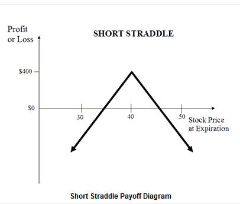
Ograniczony zysk
W przypadku strategii krótkiego stelaża maksymalny zysk jest osiągany, gdy cena akcji bazowych w dniu wygaśnięcia opcji osiąga wartość na poziomie ceny wykonania sprzedanych opcji. Przy danej cenie obie opcje wygasają jako bezwartościowe, a inwestor handlujący opcjami zatrzymuje cały początkowy kredyt w formie zysku.
Wzór na obliczanie maksymalnego zysku podano poniżej:
- Maks. zysk = Otrzymana premia netto
- Osiągnięcie maks. zysku następuje, gdy cena instrumentu bazowego = Cena wykonania short call/short put
Nieograniczone ryzyko
W przypadku strategii krótkiego stelaża duże straty mogą wystąpić, gdy cena bazowa znacząco wzrasta lub spada w dniu wygaśnięcia, powodując wygaśnięcie opcji short call lub short put głęboko w pieniądzu.
Wzór na obliczanie straty podano poniżej:
- Maks. strata = Brak ograniczeń
- Strata występuje, gdy cena instrumentu bazowego > Cena wykonania short call + Otrzymana premia netto lub Cena instrumentu bazowego < Cena wykonania short put – Otrzymana premia.
Progi rentowności
W ramach pozycji krótkiego stelaża występują dwa progi rentowności. Progi rentowności można obliczyć za pomocą następujących wzorów:
- Wyższy próg rentowności = Cena wykonania short call + Otrzymana premia netto
- Niższy próg rentowności = Cena wykonania short put – Otrzymana premia netto
Rozszerzony krótki stelaż to strategia opcyjna, która zapewnia ograniczone zyski przy nieograniczonym ryzyku. Jest stosowana przez inwestorów, którzy oczekują niewielkiej zmienności akcji bazowych w perspektywie krótkoterminowej.
Budowa strategii rozszerzonego krótkiego stelaża
Wystawienie opcji kupna OTM
Wystawienie opcji sprzedaży OTM
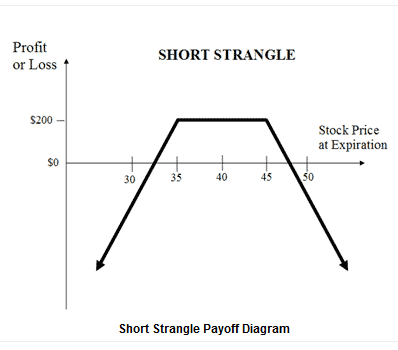
Ograniczony zysk
W przypadku strategii rozszerzonego krótkiego stelaża maksymalny zysk jest osiągany, gdy cena akcji bazowych w dniu wygaśnięcia opcji osiąga wartość na poziomie cen wykonania sprzedanych opcji. Przy danej cenie obie opcje wygasają jako bezwartościowe, a inwestor handlujący opcjami zatrzymuje cały początkowy kredyt w formie zysku.
Wzór na obliczanie maksymalnego zysku podano poniżej:
- Maks. zysk = Otrzymana premia netto
- Maksymalny zysk można wypracować, gdy cena instrumentu bazowego osiąga wartość między ceną wykonania short call a ceną wykonania short put.
Nieograniczone ryzyko
W przypadku strategii rozszerzonego krótkiego stelaża duże straty mogą wystąpić, gdy cena akcji bazowych znacząco rośnie lub spada w momencie wygaśnięcia opcji.
Wzór na obliczanie straty podano poniżej:
- Maks. strata = Brak ograniczeń
- Strata poniesiona przy cenie instrumentu bazowego > Cena wykonania short call + Otrzymana premia netto lub Cena instrumentu bazowego < Cena wykonania short put – Otrzymana premia netto.
- Strata = Cena instrumentu bazowego – Cena wykonania short call – Otrzymana premia netto lub Cena wykonania short put – Cena instrumentu bazowego – Otrzymana premia netto.
Progi rentowności
W ramach pozycji rozszerzonego krótkiego stelaża występują dwa progi rentowności. Progi rentowności można obliczyć za pomocą następujących wzorów:
- Wyższy próg rentowności = Cena wykonania short call + Otrzymana premia netto
- Niższy próg rentowności = Cena wykonania short put – Otrzymana premia netto
Zobacz wszystkie nasze ceny
Korzystaj z wyjątkowo konkurencyjnych spreadów i prowizji w ramach wszystkich klas aktywów i otrzymuj jeszcze lepsze stawki w miarę zwiększania wolumenu.

Ostrzeżenie o ryzyku dotyczące akcji
Akcje dzielą się na produkty oznaczone żółtym lub czerwonym kolorem w zależności od instrumentu.
Duńskie banki mają obowiązek klasyfikowania produktów inwestycyjnych oferowanych klientom detalicznym jako produktów zielonych, żółtych lub czerwonych, w zależności od złożoności produktu i ryzyka z nim związanego. Aby uzyskać więcej informacji, kliknij tutaj